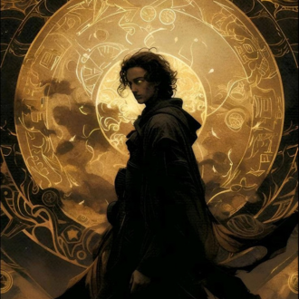

-
Paul Atreides
Descrição
Paul Atreides, também conhecido como Paul Muad'Dib, Usul e mais tarde O Pregador, foi um humano com habilidades prescientes responsável pela queda do Imperador Shaddam IV e por governar o Imperium de 10.193 até 10.205 d.G
-
Chani

Descrição
Chani Kynes, também conhecida como Sihaya pelos íntimos, foi a concubina Fremen do imperador Paul Atreides, e mãe de seus 2 filhos: Ghanima Atreides e Leto Atreides II, o Imperador-Deus. Era filha do planetólogo do Imperium Liet Kynes e de uma mãe Fremen.
-
Leto II Atreides

Descrição
Após a morte da regente Alia Atreides, sua tia, Leto II se autoproclamou imperador do Império Atreides e governou por cerca de 3.500 anos-padrão, guiando a humanidade para a sua sobrevivência. Se chamava Leto II por causa de seu avô, Leto Atreides I.
-
Ghanima Atreides

Descrição
Ghanima Atreides, apelidada de Ghani pelos íntimos, nasceu em Arrakis em 10.205 d.G.. Era filha de Paul Atreides e sua concubina fremen Chani Kynes. Nasceu um pouco antes de seu irmão gêmeo Leto Atreides II, o Imperador-Deus. Teve Farad'n Corrino como consorte.
-
Leto Atreides

Descrição
Era conhecido por sua compaixão, bondade e sua liderança. Com sua concubina Bene Gesserit, Jéssica Atreides, ele foi pai de Paul Atreides e Alia Atreides. Foi avô de Ghanima e Leto Atreides II, o Imperador-Deus. A Casa Atreides governou Caladan cerca de vinte gerações como seu feudo-siridar, até o Duque ser pressionado a se mudar para Arrakis pelo Imperador Padixá Shaddam Corrino IV Leto foi morto devido a traição de um Médico Suk, o Dr. Yueh, a mando do barão-siridar Vladimir Harkonnen. Os restos mortais do Duque se encontram na Tumba do Crânio em Arrakis.
-
Jéssica Atreides

Descrição
Jéssica era filha ilegítima do Barão Vladimir Harkonnen e uma mãe desconhecida, e era um produto do programa de reprodução das Bene Gesserit. Para ocultar a identidade de seu pai verdadeiro, constava nos arquivos das Bene Gesserit que ela era filha de Tanidia Nerus.